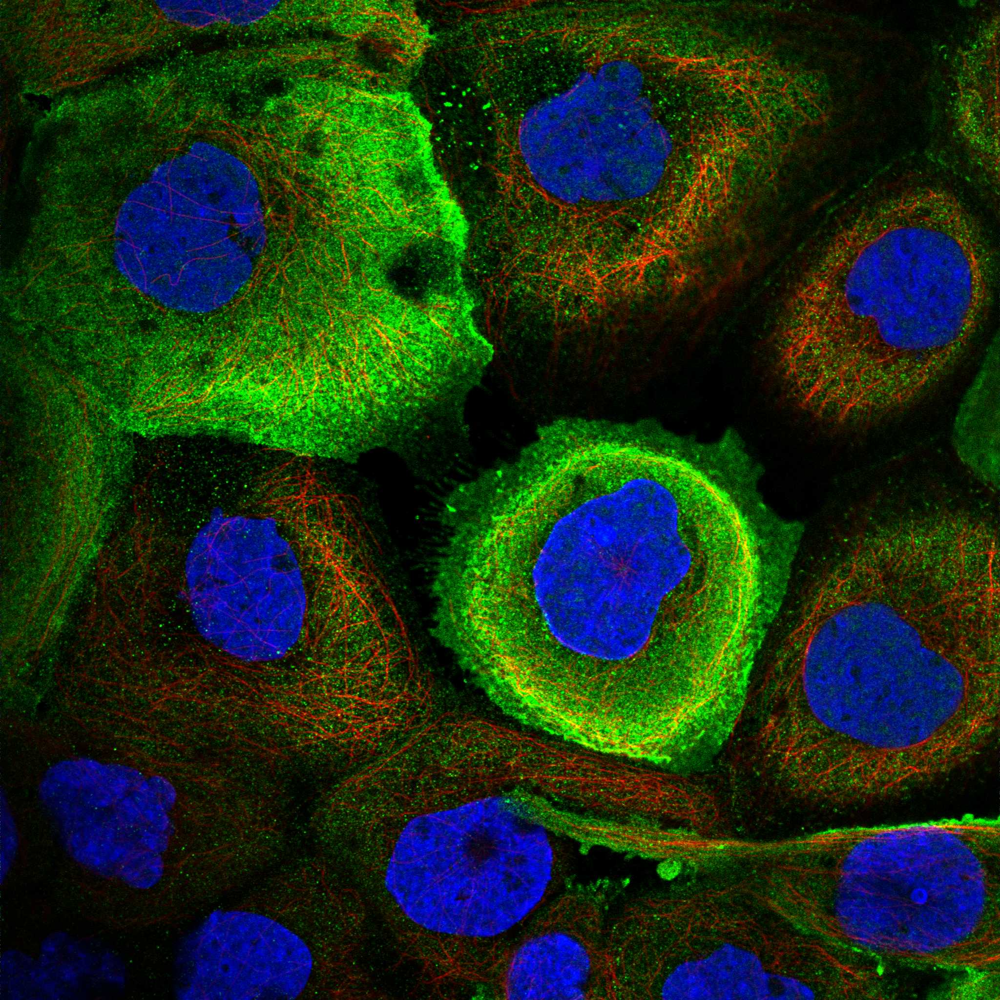
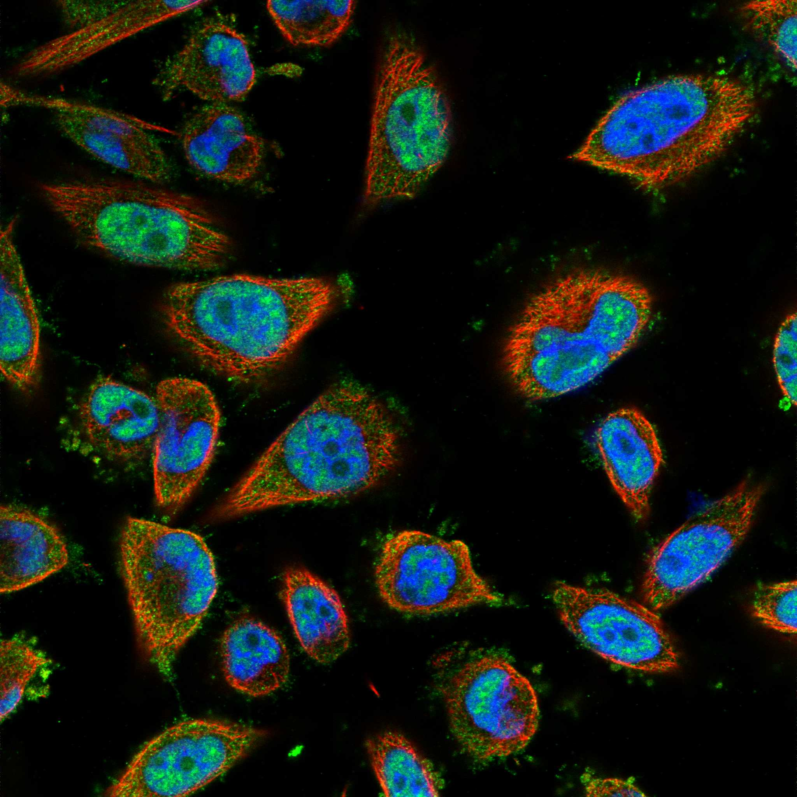

type: protein-evaluation gene: "C1orf35" date: 2026-06-03 tags: [protein-scout, nuclear-protein, evaluation] status: scored ---
C1orf35 核蛋白评估报告 (Full Re-evaluation)
1. 基本信息
| 项目 | 内容 |
|---|---|
| 基因名 / 别名 | C1orf35 / C1orf35 |
| 蛋白名称 | Multiple myeloma tumor-associated protein 2 |
| 蛋白大小 | 263 aa / 29.4 kDa |
| UniProt ID | Q9BU76 |
| 评估日期 | 2026-06-03 |
IF 图像:  
2. 评分总览
| 维度 | 得分 | 满分 | 加权后 | 关键证据摘要 |
|---|---|---|---|---|
| 🔴 核定位特异性 | 4/10 | ×4 | 16 | HPA: Nuclear speckles, Plasma membrane; 额外: Cytosol; UniProt: 无注释 |
| 📏 蛋白大小 | 10/10 | ×1 | 10 | 263 aa / 29.4 kDa |
| 🆕 研究新颖性 | 10/10 | ×5 | 50 | PubMed strict=8 篇 (≤20→10) |
| 🏗️ 三维结构 | 6/10 | ×3 | 18 | AlphaFold v6 pLDDT=62.7; PDB: 无 |
| 🧬 调控结构域 | 7/10 | ×2 | 14 | InterPro: IPR019315, IPR039207; Pfam: PF10159 |
| 🔗 PPI 网络 | 3/10 | ×3 | 9 | STRING 15 partners; IntAct 15 interactions |
| ➕ 互证加分 | — | max +3 | 1.0 | PDB+AF+STRING+IntAct cross-validation |
| 原始总分 | 118.0/180 | |||
| 归一化总分 | 65.6/100 |
3. 详细分析
3.1 核定位证据
| 来源 | 定位 | 可信度 |
|---|---|---|
| Protein Atlas (IF) | Nuclear speckles, Plasma membrane; 额外: Cytosol | Approved |
| UniProt | 无注释 | Swiss-Prot/TrEMBL |
GO Cellular Component:
- extracellular region (GO:0005576)
- ficolin-1-rich granule lumen (GO:1904813)
- secretory granule lumen (GO:0034774)
结论: 核定位信号较弱，多个数据源显示混合定位或非核偏好。
3.2 蛋白大小评估
评价: 大小适中（200-800 aa），适合常规生化实验和结构解析。
3.3 研究现状
| 指标 | 数值 |
|---|---|
| PubMed strict count | 8 |
| PubMed broad count | 10 |
| 别名(未计入scoring) | Aliases observed but not used for scoring: C1orf35 |
关键文献: 1. Whole-exome sequencing in multiplex preeclampsia families identifies novel candidate susceptibility genes.. *Journal of hypertension*. PMID: 30633125 2. Gene networks and transcriptional regulators associated with liver cancer development and progression.. *BMC medical genomics*. PMID: 33541355 3. C1orf35 contributes to tumorigenesis by activating c-MYC transcription in multiple myeloma.. *Oncogene*. PMID: 32103167 4. Development of a prognostic model for early-stage gastric cancer-related DNA methylation-driven genes and analysis of immune landscape.. *Frontiers in molecular biosciences*. PMID: 39575189 5. C1orf35 contributes to high anabolic metabolism by simultaneously promoting aerobic glycolysis and oxidative phosphorylation in multiple myeloma cells.. *Cancer gene therapy*. PMID: 41620562
评价: 极度新颖，几乎未被系统研究（PubMed ≤20篇）。
3.4 三维结构分析
| 指标 | 数值 |
|---|---|
| AlphaFold 版本 | v6 |
| AlphaFold 平均 pLDDT | 62.7 |
| 高置信度残基 (pLDDT>90) 占比 | 7.2% |
| 置信残基 (pLDDT 70-90) 占比 | 30.8% |
| 中等置信 (pLDDT 50-70) 占比 | 29.7% |
| 低置信 (pLDDT<50) 占比 | 32.3% |
| 有序区域 (pLDDT>70) 占比 | 38.0% |
| 可用 PDB 条目 | 无 |
PAE: PAE 图像未生成本地文件，结构判断基于 AlphaFold pLDDT 统计。
评价: AlphaFold 预测质量有限（pLDDT=62.7），有序残基占 38.0%。
3.5 结构域分析
| 来源 | 结构域 |
|---|---|
| InterPro/Pfam | InterPro: IPR019315, IPR039207; Pfam: PF10159 |
染色质调控潜力分析: 存在已知结构域注释，可作为功能研究的结构基础。
3.6 PPI 网络
STRING 预测互作 (combined score >0.4):
| Partner | Combined Score | Experimental | 功能类别 |
|---|---|---|---|
| TARBP2 | 0.514 | 0.497 | — |
| RBMX2 | 0.506 | 0.422 | — |
| PRKRA | 0.501 | 0.497 | — |
| LRRC14 | 0.466 | 0.000 | — |
| BRD2 | 0.458 | 0.421 | — |
| SRPK2 | 0.452 | 0.451 | — |
| LRRC24 | 0.446 | 0.000 | — |
| ENKD1 | 0.439 | 0.000 | — |
| SNIP1 | 0.433 | 0.429 | — |
| FAM133A | 0.432 | 0.432 | — |
实验验证互作 (IntAct):
| Partner | 方法 | PMID | ||
|---|---|---|---|---|
| THAP1 | psi-mi:"MI:0398"(two hybrid pooling approach) | pubmed:16189514 | imex:IM-16520 | |
| SDCBP2 | psi-mi:"MI:0398"(two hybrid pooling approach) | pubmed:16189514 | imex:IM-16520 | |
| RNPS1 | psi-mi:"MI:0006"(anti bait coimmunoprecipitation) | pubmed:17353931 | ||
| CEP70 | psi-mi:"MI:0397"(two hybrid array) | pubmed:19060904 | imex:IM-20259 | |
| CUL3 | psi-mi:"MI:0676"(tandem affinity purification) | pubmed:21145461 | imex:IM-18651 | |
| EPB41L3 | psi-mi:"MI:0007"(anti tag coimmunoprecipitation) | imex:IM-20985 | pubmed:24366813 | |
| RASSF10 | psi-mi:"MI:0007"(anti tag coimmunoprecipitation) | imex:IM-20985 | pubmed:24366813 | |
| SRPK2 | psi-mi:"MI:0424"(protein kinase assay) | pubmed:23602568 | imex:IM-17935 | |
| SRPK1 | psi-mi:"MI:0676"(tandem affinity purification) | pubmed:23602568 | imex:IM-17935 | |
| ECI2 | psi-mi:"MI:0007"(anti tag coimmunoprecipitation) | pubmed:29426014 | imex:IM-26302 |
PPI 互证分析:
- STRING + IntAct 均有数据
- STRING partners: 15，IntAct interactions: 15
- 调控相关比例: 0 / 15 = 0%
评价: STRING 15 个预测互作，IntAct 15 个实验互作。调控相关配体占比 0%。
3.7 多库互证
| 维度 | 来源 | 结果 | 是否一致 |
|---|---|---|---|
| 三维结构 | AlphaFold pLDDT=62.7 + PDB: 无 | pLDDT=62.7, v6 | 仅预测 |
| 定位 | UniProt + HPA | 无注释 / Nuclear speckles, Plasma membrane; 额外: Cytosol | 一致 |
| PPI | STRING + IntAct | 15 + 15 interactions | 数据充分 |
互证加分明细:
- 多库定位一致 (2源): +0.5
- STRING + IntAct 双源验证: +0.5
- 结构域 + AlphaFold 质量: +0
- PDB 多条目覆盖: +0
总分: +1.0 / max +3
4. 总体评价
推荐等级: ⭐⭐⭐
核心优势: 1. C1orf35 — Multiple myeloma tumor-associated protein 2，极度新颖，几乎未被系统研究（PubMed ≤20篇）。 2. 蛋白大小263 aa，大小适中（200-800 aa），适合常规生化实验和结构解析。
风险/不确定性: 1. PubMed 8 篇，研究基础极有限，功能注释不完整 2. AlphaFold 预测质量一般（pLDDT=62.7），需要更多实验结构验证
下一步建议:
- [ ] 查阅最新关键文献补充研究背景
- [ ] 获取 Protein Atlas IF 图像确认亚细胞定位
- [ ] 设计体外实验验证核定位及潜在调控功能
5. 数据来源
- UniProt: https://www.uniprot.org/uniprotkb/Q9BU76
- Protein Atlas: https://www.proteinatlas.org/ENSG00000143793-C1orf35/subcellular
- PubMed: https://pubmed.ncbi.nlm.nih.gov/?term=C1orf35
- AlphaFold: https://alphafold.ebi.ac.uk/entry/Q9BU76
- STRING: https://string-db.org/network/9606.ENSP00000
- Packet data timestamp: 2026-06-03 04:24:16